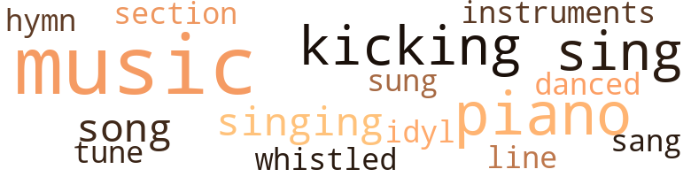
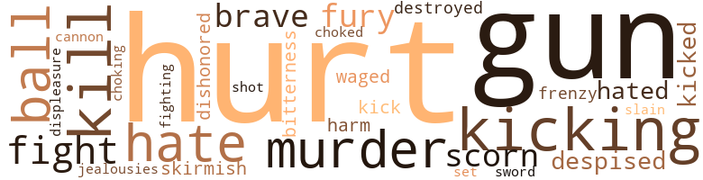

Climbers (The): A Story of Sunkissed Sweethearts, by Jones, Yorke (1912)
38 music-related terms matched in this text.
Most frequent terms in this topic: music (11); piano (5); sing (4); kicking (4); song (2)
dance.v.03
Definition: skip, leap, or move up and down or sideways
| word | sentence |
|---|---|
| danced | Then and there the old fellow danced the kan kan , whirling around like a flash , hurling me out of the buggy , my head hitting the curbing . |
hymn.n.01
Definition: a song of praise (to God or to a saint or to a nation)
| word | sentence |
|---|---|
| hymn | How they did sing the closing hymn , " Rock of Ages . " |
kick.v.04
Definition: kick a leg up
| word | sentence |
|---|---|
| kicking | He had seen other men rise to power by kicking the Negro ; why might he not do the same ? |
| kicking | This chivalrous gentleman was evidently seeking popularity by kicking the Negro ; but the high-souled law-maker found that he was about to miss his aim . |
| kicking | There were a large class of people whose sense of fair play would not allow them to stand for kicking the people of color of the State . |
| kicking | Yes , this political tumble bug ( and you know the tumble bug works in filth ; it rolls together a ball of filth in which it deposits its eggs ) had , by kicking a lowly people , secured his future . |
music.n.01
Definition: an artistic form of auditory communication incorporating instrumental or vocal tones in a structured and continuous manner
| word | sentence |
|---|---|
| music | Mingled with the old man 's plaintive voice the music of a nearby playing fountain fell on the balmy June air where , in a secluded spot , we sat on a park bench beneath a lordly beech-tree whose top was glorified by the setting sun . |
| music | " And I , of ladies most deject and wretched , That sucked the honey of his music vows . |
| music | The low , soulful music perfectly harmonizes with the sacred , tender service . |
| music | " We may live without poetry , music and art ; We may live without conscience , and live without heart ; We may live without friends ; we may live without books ; But civilized man can not live without cooks . " |
| music | I am sure these people did n't understand a word of what was said ; but the very flow of Latin appealed to their sense of music , just as big words , more musical than short ones , appeal to the Negro musical ear . |
| music | And strange to say , for those who marched to the cemetery to decorate the graves of heroes who died fighting to uphold slavery - strange to say , a Negro band furnished the music ! |
| music | The placid air had been filled with the rattle of musketry , the thunder of cannon , the throb of music and the thrill of fervid oratory uttered to justify the " lost cause . " |
| music | The salutes , the music , the speeches - we heard them all ; and along with the crowd that choked the streets , we of the Norwalk coterie , in consequence of what we had heard , were leaving the cemetery understanding better than when we went into this city of the dead - understanding and sympathizing a trifle more with the feelings of the people represented by the gray - a brave , proud people upon whom , by the stern arbitrament of the sword , had been thrust a mighty revolution . |
| music | As Fairfax had charge of the music and both Wilson and Holt were on the rostrum , this failure of the pre - arranged seating shut Mrs. Holt and myself off from the rest of our coterie . |
| music | The commencement music was inspiring . |
| music | Mrs. Holt and I had kept up a low-voiced , good-humored comment , possible only between friends so intimate as to address each other by the front name - com - ment on the fine tact displayed by Holt ; the good taste of Fairfax , evidenced by his handling of the music , and his careful drilling of the performers , which painstaking training was exhibited in the manner of the rendition of their speeches and essays . |
musical_instrument.n.01
Definition: any of various devices or contrivances that can be used to produce musical tones or sounds
| word | sentence |
|---|---|
| instruments | I had use for my satchel of instruments Tuesday afternoon ; they were still in the buggy when I drove Belle over to Rockford College for her to see Julia , from sheer force of habit ( for I never liked to leave them in the buggy at night ) , when Belle and I alighted at Holt 's I took the satchel in the house with me and set it down just inside of the hall . |
pastorale.n.01
Definition: a musical composition that evokes rural life
| word | sentence |
|---|---|
| Idyl | An Idyl of June - A Romance of Growth . |
piano.n.01
Definition: a keyboard instrument that is played by depressing keys that cause hammers to strike tuned strings and produce sounds
| word | sentence |
|---|---|
| piano | Several were to wait on the couple ; but Wilson was to be the best man , and Alma best maid ; Julia 's sisters , Olga and Gladys , aged six and seven , were to be flower girls , while on the piano in the broad hall , down into which came the wide stairway , Belle was to play the wedding march from Lohengrin . |
| piano | Unseen by either of them , I stole by the back hall up to the half-open parlor door , and , through the crack , saw Belle 's shapely fingers gliding carelessly over the piano keys , while as the cloudless morning flooded the beautiful parlor , with her head thrown back , her eyes looking into vacancy , stood Julia facing me , her mellow contralto voice flooding the air with these dreamy words of that plaintive song : " My love he stood at my right hand , His eyes were grave and sweet ; Methought he said , in this fair land O ! |
| piano | These reflections were cut short , however , when the piano ceased and I was discovered eavesdropping and overwhelmed with questions about the accident and with sympathy for not having had my breakfast . |
| piano | Belle at the piano in the broad hall . |
| piano | On the boys ' side of the hall , at a right angle to the graduates , the school choir and piano faced the ladies of the faculty . |
section.n.01
Definition: a self-contained part of a larger composition (written or musical)
| word | sentence |
|---|---|
| section | Now while it is true that stern necessity , the fruitful mother of invention , has taught Anglo-Saxons that live South of Mason 's and Dixon 's line much about payment and treatment of Negro domestics that the white people of this section never knew before Appomattox , yet , nevertheless , as regards wages and treatment of servants , for the Southern people : " There remaineth yet very much land to be possessed . " |
sing.v.02
Definition: produce tones with the voice
| word | sentence |
|---|---|
| sing | How they did sing the closing hymn , " Rock of Ages . " |
| sing | When I heered dat chile 's voice yestiday , so full o ' feelin ' hit brung up ole times , when me an ' Jim used to make up shouts an ' sing 'em . |
| sung | Autumn has been sung thus : " The melancholy days have come , the saddest of the year . " |
| sang | But it was of a Northern autumn and the month of November , too , at that , which Bryant sang as " the melancholy days . " |
| sing | An ' Liza ------- " Here she was interrupted by the applause of Fairfax announcing that Miss Alice Ilill , Juddy Hill 's daughter , would sing a solo while they were waiting for the president 's return . |
| sing | The interest of the two women bent on the beautiful girl going up on the rostrum to sing . |
singing.n.01
Definition: the act of singing vocal music
| word | sentence |
|---|---|
| singing | Mum here , " continued I , touching my breast with the forefinger of my right hand , then giving my attention to Miss Alice Hill 's solo , more , I admit , to the exquisitely pretty girl than to her singing . |
| singing | Mrs. Holt had provided seats with herself - it was where the president 's family usually sat - for Belle and her mother , while it was expected that I would play " distinguished visitor " on the rostrum ; but Belle was towed off by Julia to a seat near the girl graduates ( the view of Fairfax , who had charge of the singing , was better there ) ; Mrs. Clay sat with the girls * matron , Mrs. Ada Harmon , an old friend ; while I , refusing to be " big man on the rostrum , " plumped down beside Mrs. Holt ; meanwhile ' the two vacant seats in front of us were , at Mrs. Holt 's invitation , taken by Mom Kitty and Isaac Scattergood 's handsome , vivacious , ripe pear-colored little housekeeper , Mrs. Juddy Hill , a popular lady who was always given her whole name , Juddy Hill . |
song.n.01
Definition: a short musical composition with words
| word | sentence |
|---|---|
| song | Unseen by either of them , I stole by the back hall up to the half-open parlor door , and , through the crack , saw Belle 's shapely fingers gliding carelessly over the piano keys , while as the cloudless morning flooded the beautiful parlor , with her head thrown back , her eyes looking into vacancy , stood Julia facing me , her mellow contralto voice flooding the air with these dreamy words of that plaintive song : " My love he stood at my right hand , His eyes were grave and sweet ; Methought he said , in this fair land O ! |
| song | Was that song of hopeless love prophetic ? |
tune.n.01
Definition: a succession of notes forming a distinctive sequence
| word | sentence |
|---|---|
| tune | When nature that glorious June day was in tune with our happy hearts , how sweet seemed love ? |
| line | Now while it is true that stern necessity , the fruitful mother of invention , has taught Anglo-Saxons that live South of Mason 's and Dixon 's line much about payment and treatment of Negro domestics that the white people of this section never knew before Appomattox , yet , nevertheless , as regards wages and treatment of servants , for the Southern people : " There remaineth yet very much land to be possessed . " |
whistle.v.01
Definition: make whistling sounds
| word | sentence |
|---|---|
| whistled | I whistled . |
63 violence-related terms matched in this text.
Most frequent terms in this topic: hurt (8); gun (5); kicking (4); murder (3); hate (3)
brush.n.06
Definition: a minor short-term fight
| word | sentence |
|---|---|
| skirmish | I was with my mother in a tent in a Union camp one night when a skirmish took place . |
cannon.n.04
Definition: heavy automatic gun fired from an airplane
| word | sentence |
|---|---|
| cannon | The placid air had been filled with the rattle of musketry , the thunder of cannon , the throb of music and the thrill of fervid oratory uttered to justify the " lost cause . " |
contemn.v.01
Definition: look down on with disdain
| word | sentence |
|---|---|
| scorn | " For thy sweet love remember 'd such wealth brings That then I scorn to change my state with kings . " |
| despised | " The taunting and imposition ceased ; and much the youth loved the sire of the maiden and sought his home , where oft he beheld the maiden and noted the comeliness of her and the sweetness of her and that she despised him not . |
| despised | When he released her he said : " This ought to be added to the fairy story , ' And the youth and the princess did wed ; and ever after they lived happily ; for the princess blamed not the son for the father , and the youth thrust not his father upon the princess nor her family ; but , on the other hand , for that Augustus loved the truth and despised a lie , he made it a point of honor neither to proclaim nor deny the fact that he was the son of Jeter the shameful . ' " |
| scorn | " Pretty lords of creation , you men are ! " replied Belle in feigned scorn . |
craze.n.02
Definition: state of violent mental agitation
| word | sentence |
|---|---|
| frenzy | Yet they keep themselves in such a frenzy about social equality , or rather social intercourse , that it comes to pass that in this matter the best Negroes and best white people are Jews and Samaritans that have no dealings ! |
destroy.v.04
Definition: put (an animal) to death
| word | sentence |
|---|---|
| destroyed | Long years the old man drank until the fiery fluid had destroyed his manhood , made loathsome his body and rendered his name , once a fair one , a hissing and a by-word . |
displeasure.n.01
Definition: the feeling of being displeased or annoyed or dissatisfied with someone or something
| word | sentence |
|---|---|
| displeasure | This preference led the Holts to see not , with displeasure , that Julia and Fairfax were under the spell of the little blind god . |
engage.v.07
Definition: carry on (wars, battles, or campaigns)
| word | sentence |
|---|---|
| waged | Her sire was fellow seeker of truth with the youth ; and for that unfeeling fellow knowledge seekers laid imposing hands upon the motherless fairy-boy and against him waged cruel bantering tongues , the noble father faced the ribald throng and said : ' Whoso touch-eth the youth or waggeth unkind tongue against him , with me , even me must reckon . ' |
fight.n.05
Definition: a boxing or wrestling match
| word | sentence |
|---|---|
| fight | He had just come in from the foot-ball field , where he had left the bulk of the student body engaged in a match game of foot-ball , at that time still a gentlemanly game for the many , not yet having degenerated into a brutal fight between a few ; consequently he had on not the city clothes and shoes purchased since his matriculation , but he wore the country-store clothes and heavy thick-soled bull hide boots in which he arrived at Norwalk . |
| fight | He won a big case , an ' de white lawyers he won it over got so mad dat dey picked a fuss wid him , an ' in de fight shot him . |
fight.v.02
Definition: fight against or resist strongly
| word | sentence |
|---|---|
| fight | Now the Holts were proud of their family 's respectability ; evidently then , when the unwelcome truth that she was bound by promise to the besotted pauper 's son was thrust upon the proud girl , she fled to her room , taking the picture with her , there to fight her battle alone . |
| fighting | And strange to say , for those who marched to the cemetery to decorate the graves of heroes who died fighting to uphold slavery - strange to say , a Negro band furnished the music ! |
fury.n.01
Definition: a feeling of intense anger
| word | sentence |
|---|---|
| fury | With his cheeks streaming with bitter brine and his eyes as red as fire , he is reported to have cried in a fury that recked not of grammar : " Are there one , is there two more that wants to cobb me ? |
| fury | When the strife had almost spent its fury , one night some men of the South fell silent and swift on the camp of the men of the North . |
gag.v.06
Definition: cause to retch or choke
| word | sentence |
|---|---|
| choked | The salutes , the music , the speeches - we heard them all ; and along with the crowd that choked the streets , we of the Norwalk coterie , in consequence of what we had heard , were leaving the cemetery understanding better than when we went into this city of the dead - understanding and sympathizing a trifle more with the feelings of the people represented by the gray - a brave , proud people upon whom , by the stern arbitrament of the sword , had been thrust a mighty revolution . |
| choking | " Liza , poo ' thing ! " he added in choking voice , " died three weeks arter dat . |
gun.n.01
Definition: a weapon that discharges a missile at high velocity (especially from a metal tube or barrel)
| word | sentence |
|---|---|
| gun | Den de folks ' gun to call me prophet . " |
| gun | " When he had said dat , an ' whole lot mo ' like it , an ' was settin ' down fannin ' hissef , I dreampt dat de purty little man drapt down in de seat bellin ' dat big ' ristocrat an ' ' gun whisperin ' in his ear . |
| gun | " But dat voice come again solemner an ' solemner an ' I was mo ' ' fraid o ' de voice dan o ' de whiete people ; so I got up an ' ' gun to plead fo ' my poo ' people , de whiete folks wid mouths open spellboun ' wid surprise . |
| gun | " Well , de folks ' gun to call me prophet arter I told my dream ; fo ' dey saed my vision meant dat I was called to be a preacher an ' a prophet . |
| gun | Dey met Jeta Horn drunk when dey was comin ' back , an ' he ' gun to jaw arter 'em an ' say Jack was in love wid Jinnie , an ' dat he was gwine to tell Ira . |
hate.v.01
Definition: dislike intensely; feel antipathy or aversion towards
| word | sentence |
|---|---|
| hate | " I hope you do n't hate him ! " |
| hate | " No , Doctor Wade , I do n't hate ole Jeta ; but I do n't love ' im . |
| hate | I always hate to hitch up my horse . |
| hated | How the prophet hated the man into whose arms his wife had been put ! |
| hated | I hated it like all the world , for she was an affectionate and intelligent old thing , and you do get so attached to an animal that you 've had for some time . |
injury.n.01
Definition: any physical damage to the body caused by violence or accident or fracture etc.
| word | sentence |
|---|---|
| hurt | He left the institution hurt to the heart . |
| hurt | What he then saw and heard hurt him still more . |
| harm | De kind o ' talk you gin out will do my cause mo ' harm dan good - Hit will make friends fo ' de nigga . |
| hurt | Soon after Rockford commencement the Hon. Nathan F. Cleggett had been moved by his hurt of heart over Negro uplifting to vow to introduce a bill in the coming session of the legislature to turn the institution into an asylum for the colored insane now confined in jails . |
jealousy.n.01
Definition: a feeling of jealous envy (especially of a rival)
| word | sentence |
|---|---|
| jealousies | Who does not know that small communities breed cabals and jealousies ? |
kick.v.04
Definition: kick a leg up
| word | sentence |
|---|---|
| kicking | He had seen other men rise to power by kicking the Negro ; why might he not do the same ? |
| kicking | This chivalrous gentleman was evidently seeking popularity by kicking the Negro ; but the high-souled law-maker found that he was about to miss his aim . |
| kicking | There were a large class of people whose sense of fair play would not allow them to stand for kicking the people of color of the State . |
| kicking | Yes , this political tumble bug ( and you know the tumble bug works in filth ; it rolls together a ball of filth in which it deposits its eggs ) had , by kicking a lowly people , secured his future . |
kick_back.v.02
Definition: spring back, as from a forceful thrust
| word | sentence |
|---|---|
| kick | The trouble was , that this gallant member of the Assembly proposed to kick the black man too hard . |
| kicked | But she cried , an ' kicked up an ' went on scan ' - lous . |
| kicked | He kicked ! |
kill.v.10
Definition: cause the death of, without intention
| word | sentence |
|---|---|
| kill | " I dreampt dat dere was wa 'm times in dat hall while I was speakin ' my piece - some o ' de whiete folks was lookin ' mad an ' some laughin ' fit to kill deerselves . |
| Kill | Kill him ! |
| Kill | Kill him ! ' |
| kill | Dey owned up everything an ' cried like babies ; fo ' dey sho ' did love fit to kill ! |
murder.n.01
Definition: unlawful premeditated killing of a human being by a human being
| word | sentence |
|---|---|
| murder | He overheard a plot to waylay and murder the lawyer , and Fairfax , by revealing what he knew , caused the plot to fail . |
| murder | " Twixt de niggas dat make ' tend dey is Gawd 's servants but ai n't , an ' dem dat commit all grades o ' sin fum dat o ' bein ' lazy an ' no ' count up to de crimes o ' murder an ' rape - I do n't have to run arter niggas ; I git all de niggas I want ' dout havin ' to run arter 'em . |
| murder | " Canst thou not minister to a mind diseased ; Pluck from the memory a rooted sorrow ? " asks Macbeth of the physician engaged for his wife insane with remorse because of the murder of King Duncan . |
murder.v.01
Definition: kill intentionally and with premeditation
| word | sentence |
|---|---|
| slain | Soon it began to be said : " ' Saul ' Granville has slain his thousands , but ' David ' Wilson his tens thousands . |
musket_ball.n.01
Definition: a solid projectile that is shot by a musket
| word | sentence |
|---|---|
| ball | Yes , this political tumble bug ( and you know the tumble bug works in filth ; it rolls together a ball of filth in which it deposits its eggs ) had , by kicking a lowly people , secured his future . |
| ball | Of fine physique and presence , the usual height and weight , chestnut colored , with silky brown hair and open , honest , dark hazel eyes , no one studied , played ball and did Christian work with more energy than did the only candidate for the ministry in our class . |
| ball | But now even the lovely afternoon had waned until the sun hung a lurid ball just above the hazy horizon . |
pain.v.02
Definition: cause emotional anguish or make miserable
| word | sentence |
|---|---|
| hurt | The Hon. Nathan F. Cleggett , a member of the legislature , one of the gentlemen who accompanied the Governor to Rockford commencement - this gentleman got his feelings hurt that day . |
| hurt | Yes , he was hurt to the heart as Joseph 's brethren were over Joseph 's coat of many colors ; as Ahab was over Naboth 's vineyard ; as that Roman senator was who , seeing the glory of the Punic capital , ended every speech thereafter , on no matter what subject , with the words : " Carthage must be destroyed . " |
| hurt | Gus himself has always been all right so far as I 'm concerned ; but Joe , when I first heard it , heard that he was old Jeta 's son - well , I confess my pride was hurt ; but now I am so proud of Gus , I do n't care whose son he is . " |
| hurt | " Of course my pride was hurt just as yours was , Gus ; but from the first moment I knew you would feel alone in the world . |
| hurt | You see , you do n't expect much of a dumb brute ; so its shortcomings do n't hurt you as a person 's do . |
rape.v.01
Definition: force (someone) to have sex against their will
| word | sentence |
|---|---|
| dishonored | One is , that slavery has dishonored manual toil in the South . |
resentment.n.01
Definition: a feeling of deep and bitter anger and ill-will
| word | sentence |
|---|---|
| bitterness | " But a bitterness the future held for them . |
shoot.v.02
Definition: kill by firing a missile
| word | sentence |
|---|---|
| shot | He won a big case , an ' de white lawyers he won it over got so mad dat dey picked a fuss wid him , an ' in de fight shot him . |
sic.v.01
Definition: urge to attack someone
| word | sentence |
|---|---|
| set | He became " a city set on a hill that can not be hid " ; but his triumphant , demonstrative zeal , while delightful to the earnest , was to another set of students simply amusing . |
sword.n.01
Definition: a cutting or thrusting weapon that has a long metal blade and a hilt with a hand guard
| word | sentence |
|---|---|
| sword | The salutes , the music , the speeches - we heard them all ; and along with the crowd that choked the streets , we of the Norwalk coterie , in consequence of what we had heard , were leaving the cemetery understanding better than when we went into this city of the dead - understanding and sympathizing a trifle more with the feelings of the people represented by the gray - a brave , proud people upon whom , by the stern arbitrament of the sword , had been thrust a mighty revolution . |
weather.v.01
Definition: face and withstand with courage
| word | sentence |
|---|---|
| brave | In the confusion , when death filled the darkness and brave men bit the dust , the youth , a mere child , was separated from his mother , and ever after moured her as dead . |
| brave | Love had placed its flowers and dropped its reminiscent tears on the graves above the dust of warriors , it is true , brave and sincere , but warriors whose success would have riveted the galling chains of bondage on their brothers in black . |
167 religion-related terms matched in this text.
Most frequent terms in this topic: church (35); pastor (23); prophet (16); preacher (14); God (14)
apostle.n.03
Definition: (New Testament) one of the original 12 disciples chosen by Christ to preach his gospel
| word | sentence |
|---|---|
| Apostle | Here it is : Ham , rising in Christian civilization ; Japhet , getting used to it ; aye , for despite " wrongs that need resistance , " Power benign is moving Japhet to help Ham to rise in civilization , as , according to Acts the third , the Apostle Peter helped up the lame man at the Gate Beautiful . |
blessing.n.05
Definition: the act of praying for divine protection
| word | sentence |
|---|---|
| benediction | The solo over , and the prolonged clapping , after everybody else had stopped , of the half dozen fellows in love with pretty Alice , we had the rest of the programme : the speeches of " distinguished visitors , " somebody , now that the Governor had gone ; flowers and presents of doting friends , remarks by the president , announcements , benediction . |
| benediction | Then followed the benediction . |
| benediction | When she got down on her dying bed , Wilson declared that his daily visits to her were a benediction to him . |
christian.n.01
Definition: a religious person who believes Jesus is the Christ and who is a member of a Christian denomination
| word | sentence |
|---|---|
| Christian | Here it is : Ham , rising in Christian civilization ; Japhet , getting used to it ; aye , for despite " wrongs that need resistance , " Power benign is moving Japhet to help Ham to rise in civilization , as , according to Acts the third , the Apostle Peter helped up the lame man at the Gate Beautiful . |
| Christian | She was not a Christian , though a constant attendant on our church and Sabbath School and a most doughty champion of our church and its pastor against all assailants . |
| Christian | The young Christian was not long in reaching the decision that peace must be conquered . |
| Christian | Of fine physique and presence , the usual height and weight , chestnut colored , with silky brown hair and open , honest , dark hazel eyes , no one studied , played ball and did Christian work with more energy than did the only candidate for the ministry in our class . |
| Christian | What seemed singular to the father is the fact that Julia , though not a professing Christian , was likewise moved to tears with Fairfax . |
church.n.02
Definition: a place for public (especially Christian) worship
| word | sentence |
|---|---|
| church | His Excellency was a member of our denomination - and a great stickler for his church . |
| church | That she had done so was apparent to every one in the church except the earnest divine himself . |
| church | She was a fine girl , and all the church folks loved her . |
| church | The streets at the time of his arrest were filled with people of both races , going home from church , and the exhibition that Jeter made in the face of all Rockford , ( for there were as many as six churches in the neighborhood of his arrest ) made us ashamed for our race . |
| church | " That 's what your church folks all believe , " said I , " and it seems to me you are to be congratulated that it is so . " |
| church | Monday , the fifteenth of July , Rev. Walter Granville 's church gave a steamboat excursion down the river . |
| church | Indeed , while we laugh over the fact that colored people go to funerals as recreation - that is , certain classes of them - yet it remains true that the Negro church furnishes the principal pleasurable occasions open to the race : all the public amusements open to white people of the South are closed to the people of color . |
| church | The foregoing prepared for the announcement that Rev. Granville 's church picnic carried an immense crowd ; chicken , chicken and chicken ; and so many watermelons that a colored green grocer , a droll wag , said : " Watermil-lions is gone up in price , 'cause so many darkeys has gone down de river . " |
| church | Fairfax got a position as teacher in a State normal school in one of the Gulf States when he went from Norwalk ; Wilson and Holt each took a church in the North , while I went South and hung out my physician 's shingle in the city of Rockford , where there were more colored than white people . |
| church | I saw an opportunity for my church in the city of my adoption , and fixed on Holt to help get it up . |
| church | Soon , by united effort , Wilson and myself had effected the organization of a church that we believed would become a power for good in that community . |
| church | Mom Kitty announced her determination to stay and go from our house to preaching at her church just two blocks away . |
| church | Ira Lewis was a good man - an ' de greatest man fuh lodge an ' church you evah sawl " Every blessed night of de week dat man would be gone to some society er religious meetin ' ; fuh he was a big deycon in de church , a big Odd Fellow , a big Mason ; in fact , a big evahthing he could jine . |
| church | I nevah seed sich a jiner in all my bo 'n days l He encouraged Jinnie to have a house full of young folks to keep her company 'cause she wa 'n' t no church member ; so when Jra would be gone to church meetin 's , prayer meetin 's , lodge meet-in 's an ' things , Jinnie would be at home wid a house full o ' gals an ' boys , havin ' a high ole time , or else gone wid some young man * to a party or to de theater . |
| church | Grayson , a great , black , masterful six-footer , belonged to Rev. Walter Granville 's church , one of the largest in town . |
| church | One of the deceased 's lifelong friends said : " Dat little man whar done come heah an ' got up a church - dat man 's a wonda to me when lie gits in de pulpit . |
| church | One Sabbath mornin , as we Norwalkers ' still under the spell of one of Wilson 's most soul-moving sermons , were returning home from church , Holt evidently voiced the feelings of us all when he said to me : " Wade , I tell you what it is : at his best , Wilson certainly has the power of the Spirit on him as men of old had ! " |
| church | For this they were now waiting comfortably seated near an old ivy-mantled church ruin , which ancient pile the city sought to preserve as a relic . |
church.n.04
Definition: the body of people who attend or belong to a particular local church
| word | sentence |
|---|---|
| church | Before he was elected to his present post , he had become very much interested in Wilson as the pastor of our church . |
| church | He , in common with the white people of the region , members of our denomination , had great pride in our church , and in Wilson . |
| church | She was not a Christian , though a constant attendant on our church and Sabbath School and a most doughty champion of our church and its pastor against all assailants . |
| church | She was not a Christian , though a constant attendant on our church and Sabbath School and a most doughty champion of our church and its pastor against all assailants . |
| church | Mom Kitty was at our church one Sunday morning . |
| church | Zeke Brown was visiting our church , fulfilling the promise made to our pastor Decoration day , though President Holt was preaching that morning for Rev. Walter Granville . |
| church | Except Mrs. Holt , who was with her husband , the rest of the Nor-walkers were at our church this perfect day in June , and a good-sized congregation besides . |
| church | Our church was like one family . |
| churches | The streets at the time of his arrest were filled with people of both races , going home from church , and the exhibition that Jeter made in the face of all Rockford , ( for there were as many as six churches in the neighborhood of his arrest ) made us ashamed for our race . |
| church | " That 's what Julia told me at church , " he replied . |
| church | Wilson and I kept bachelor 's hall until our church was organized . |
| church | De fou ' th Sunday in March our church had a big baptisin ' in de pond in de park . |
| church | So simple , sympathetic and earnest was he that although ours was a denomination new among Rockford colored people , and our house of worship , one of the least attractive in town , nevertheless our church , in the face of most strenuous opposition , grew in numbers and power for good . |
| church | One of the most valuable additions to our church was Henry Blake , mentioned some pages back as one of Julia 's admirers , a young lawyer that settled in Rockford about the time I did . |
| church | Because Blake had joined our church , quite a friendship had sprung up between us and the kind hearted Friend - especially between him and myself ; for he thought I had been of great use to him in securing for him an excellent truck farmer in John Hill , and a first-class housekeeper in Judah Hill , his wife , two people about the age of their employer . |
| church | This opinion may explain why our church and its gifted pastor were often abused , even from the pulpit . |
| churches | Yet , he had one of the largest churches in town . |
| church | Said Holt , with a twinkle : " If you like so well to heah him preach , why do n't you join his church ? |
| church | " Been a deacon in your church ? " asked Mrs. Holt in genuine surprise . |
curate.n.01
Definition: a person authorized to conduct religious worship
| word | sentence |
|---|---|
| pastor | Before he was elected to his present post , he had become very much interested in Wilson as the pastor of our church . |
| pastor | For these reasons , Holt asked our pastor to go and see the Governor in behalf of Rockford College . |
| pastor | She was not a Christian , though a constant attendant on our church and Sabbath School and a most doughty champion of our church and its pastor against all assailants . |
| pastor | It was the pastor 's custom , after the service , to shake hands with every single one of his congregation . |
| pastor | The pastor thought the girl was unhappy about her soul , and so redoubled his efforts to lead her to the Holy One , while Alma , the meantime , grew still more unhappy . |
| pastor | Yes , I was anxious that our pastor should succeed in bringing her into the kingdom ; but , nevertheless , Belle and I had many a good laugh that night at Wilson 's holy blindness to Alma 's love . |
| pastor | This my pastor had several times done . |
| pastor | I 've seen for some time that you are in love with your pastor . " |
| pastor | " My pastor ? |
| pastor | I have no pastor ! " she said sadly . |
| pastor | Zeke Brown was visiting our church , fulfilling the promise made to our pastor Decoration day , though President Holt was preaching that morning for Rev. Walter Granville . |
| pastor | In closing , the pastor used the same illustration he used with Alma on the vine-clad , secluded porch . |
| pastor | " I just hope something will happen to open his eyes to his own heart ; for Alma would make a fine pastor 's wife , " said Belle . |
| pastor | My pastor said nothing to this . |
| pastor | Belle had said that she hoped something would happen to open our pastor 's eyes to his heart . |
| pastor | The rumor that had smitten colored Rockford had evidently hit my dear pastor and classmate so hard as to open his blinded eyes to his own heart . |
| pastor | Did my pastor offer Mr. and Mrs. Harper seats in his carriage ? |
| pastor | '" We were all happy in our dear pastor 's happiness . |
| pastor | There were a large class of intelligent , respectable , well-to-do colored people in Rockford ; so that what with the friends I made professionally , what with those I made socially , and what with having my classmate as pastor , life went pretty well with me . |
| pastor | A year after Wilson left me to continue keeping bachelor 's hall I was able to do better by the race and better by Holt than if I had succeeded in getting him as my pastor . |
| pastor | My pastor , Rev. Robert N. Wilson , seemed to me to be another illustration of the truth of Dr. Dale 's saying . |
| pastor | This opinion may explain why our church and its gifted pastor were often abused , even from the pulpit . |
| pastor | Wilson , be it said , was not Granville 's superior in natural ability ; my pastor was the other minister 's superior in culture and piety alone ; for Granville had only a smattering of training . |
deity.n.01
Definition: any supernatural being worshipped as controlling some part of the world or some aspect of life or who is the personification of a force
| word | sentence |
|---|---|
| divinity | Then the congratulations and the myriad-voiced hubbub of the breaking up of a great , enthusiastic throng of the offspring of Ham - demonstrative children of the tropics - hopeful for the future because of the tear-stained , blood-flecked past ; and because " There is a divinity that shapes our ends , Rough-hew them how we will , " who is effecting the only solution of the race problem . |
| Deity | Both the dwellers in Hellas and those on the Nile bowed before objects at first intended as symbols of either the Deity or of some benevolent or malevolent power of supposed divine origin . |
divine.v.01
Definition: perceive intuitively or through some inexplicable perceptive powers
| word | sentence |
|---|---|
| divined | Only the Norwalkers , who , alone , were in the secret , divined that Fairfax , even at the altar , had offered to release Julia if she desired to be freed . |
eden.n.01
Definition: any place of complete bliss and delight and peace
| word | sentence |
|---|---|
| Eden | Well , now , what did he who was heart-hurt over the happiness of our first parents in Eden ? |
| heaven | As soon as Wilson came to the buggy , I saw at a glance ( I knew him so well ) that he was in the seventh heaven of spiritual fervor ; for he had on his face the look it wore when he was at his best in the pulpit . |
| heaven | " No , no ; matches are made in heaven - that is , the happy ones , " she answered . |
| heaven | " I do n't believe they are made in heaven . " |
| Heaven | I had barely time to open it when Belle heard me ; and my " Heaven 's last best gift to man " came rushing into my office , plumped her little self on my knee and gave me such a soulful labial morning salutation as makes life worth living . |
god.n.03
Definition: a man of such superior qualities that he seems like a deity to other people
| word | sentence |
|---|---|
| God | * * * And all the people saw him walking and praising God . |
| God | " What hath God wrought ! " |
| God | Yes , and the heart-hurt lawmaker went about to break up Negro uplifting by means of Rockford , as he who is described in Genesis as " more subtle than any beast in the field which the Lord God had made " took steps to put an end to the happiness of earth 's first pair of lovers . |
| God | What a pity that we do n't all take God at His word and just depend on His promises as a little child holds you to your word . " |
| God | What becomes of the divine sovereignty if God 's plan can be upset as men 's can ? " |
| gods | The dog , the cat , the bull - these were gods among the still more refined ancient Egyptians . |
| God | " Mr. Holt , " continued he , regaining self-control , " I do n't think if you had known you would have been willing for me to enter your family ; and while I feel that I am just as good as anybody that walks God 's green earth " - and here he straightened up and looked Holt straight in the eyes - " yet my self-respect , Mr. Holt , demands that I tell you all , so that you can decide whether or not the - the marriage shall take place . " |
| God | My God 's gift ! " |
| God | " I thank God that you feel that way ! |
| God | I thank God that you understand me so well ! " |
| God | " He is nobody to be proud of , Julia ; but it is the grace of God and environment that make the difference between people in this world . " |
| God | I should feel that God had greatly blessed Belle and myself if He gave us a daughter as noble as Julia , and a son as manly as Gus . |
| god | This preference led the Holts to see not , with displeasure , that Julia and Fairfax were under the spell of the little blind god . |
| God | That 's usually because of the foolish kind of seminary education that totally ignores the fact that God made woman to be a mother and home-maker . |
| God | I bless God that I ever knew Dr. Dale ! |
| gods | All of us Norwalkers went to the cemetery as beautiful as a garden of gods . |
| God | " Bless God for it ! " added Holt with equal unction . |
hindu.n.02
Definition: a person who adheres to Hinduism
| word | sentence |
|---|---|
| Hindoo | Down the broad stair , looking like a Hindoo princess , comes the dainty little bride . |
| Hindoos | More of the chilled quintessence of the fluid product of the animal sacred to the Hindoos , I will not take ; for so copiously have I indulged the clamorous calls of a craving appetite , that an oppressive sense of inward fullness admonishes me , admonishes me most eloquently to desist from further participation . " |
hymn.n.01
Definition: a song of praise (to God or to a saint or to a nation)
| word | sentence |
|---|---|
| hymn | How they did sing the closing hymn , " Rock of Ages . " |
idol.n.01
Definition: a material effigy that is worshipped
| word | sentence |
|---|---|
| idols | The Romans and the Greeks worshipped idols of wood and stone . |
jerusalem.n.01
Definition: capital and largest city of the modern state of Israel (although its status as capital is disputed); it was captured from Jordan in 1967 in the Six Day War; a holy city for Jews and Christians and Muslims; was the capital of an ancient kingdom
| word | sentence |
|---|---|
| Jerusalem | " I am black , but comely , O ye daughters Of Jerusalem , as the tents of Kedar . " |
jew.n.01
Definition: a person belonging to the worldwide group claiming descent from Jacob (or converted to it) and connected by cultural or religious ties
| word | sentence |
|---|---|
| Jew | " Then must the Jew he merciful . " |
| Jews | Yet they keep themselves in such a frenzy about social equality , or rather social intercourse , that it comes to pass that in this matter the best Negroes and best white people are Jews and Samaritans that have no dealings ! |
messiah.n.01
Definition: any expected deliverer
| word | sentence |
|---|---|
| Christ | You have only to take Christ at His word , and love Him back again for His love to you ! |
| Christ | He said to me : " I was thinking only of Christ , while she was thinking only of me . " |
prayer.n.01
Definition: the act of communicating with a deity (especially as a petition or in adoration or contrition or thanksgiving)
| word | sentence |
|---|---|
| prayer | " We do pray for mercy : and that same prayer doth teach us all to render The deeds of mercy . " |
| prayer | His prayer that night contained these significant words : " Thou knowest we do love Thee , and that we do want to do right . |
| prayer | I nevah seed sich a jiner in all my bo 'n days l He encouraged Jinnie to have a house full of young folks to keep her company 'cause she wa 'n' t no church member ; so when Jra would be gone to church meetin 's , prayer meetin 's , lodge meet-in 's an ' things , Jinnie would be at home wid a house full o ' gals an ' boys , havin ' a high ole time , or else gone wid some young man * to a party or to de theater . |
preacher.n.01
Definition: someone whose occupation is preaching the gospel
| word | sentence |
|---|---|
| preacher | The upshot of Wilson 's constant , fervent pleading with the girl to give her heart to the Savior was , that she gave it to the preacher . |
| preacher | When he shook hands with Alma that morning , Mom Kitty squeezed my arm to attract my attention to them and said : " Dat gal sholy does love dat preacher ! |
| preacher | For nearly three-quarters of an hour we hung on the preacher 's Spirit-breathed words . |
| preacher | " No sail , " replied he , " I s ' pose I 'd a been a preacher dis very minute ef it had n't been fo ' dat ole nigga , Jeta , " - this with warmth . |
| preacher | " Oh 'cause , when he knocked me outen my deyconry , he knocked me outen bein ' a preacher too ! |
| preacher | " Well , de folks ' gun to call me prophet arter I told my dream ; fo ' dey saed my vision meant dat I was called to be a preacher an ' a prophet . |
| preacher | Sence dey tuk my deyconry , I ai n't thought no mo ' ' bout bein ' no prophet nor preacher nuther . " |
| preacher | The young preacher ceased to feel chagrined that so interesting a young woman was in love with him , when Alma rang the true gold of the kingdom , although he declared that he was not interested in any woman . |
| preacher | That young lady must , however , have made some discovery about the preacher who persisted in declaring that he had no interest in any woman ; for Alma 's love ceased to make her unhappy as it had formerly done . |
| preacher | President F. R. Dale used to say : " Young gentlemen , no man can preach the Gospel with any more force than the power with which he lives it ; for what the preacher is , counts for more than what he knows or says . " |
| preacher | The lawyer and the preacher were Such good friends and so much alike in appearance , they were spoken of as Grayson and Granville , the Law and the Gospel . |
| preacher | How often does it happen that the Negro preacher with the largest following is not , by reason of lack of training and good character , morally uplifting his followers . |
| preacher | If the preacher did not arrive at the usual hour of his daily visit to the sick , it was pitiful to hear the old man say : " I wish dat boy would come ! " |
| preacher | After having greeted us , and chatted awhile about the day 's doings , Zeke said to the young preacher : " Elda Wilson , I promised you a while ago dat I was comin ' up to yo ' chu ' ch dis comin ' Sunday . |
prophet.n.01
Definition: an authoritative person who divines the future
| word | sentence |
|---|---|
| oracle | In the light of Julia 's purpose and feeling , it is apparent that her note is a most unequivocal declaration of her loyalty ; to Fairfax , however , hoping , fearing , sensitive and proud , you can see that the note was as ambiguous as a message from the Delphian oracle , which prophecies were so worded as to be true no matter what happened . |
prophet.n.02
Definition: someone who speaks by divine inspiration; someone who is an interpreter of the will of God
| word | sentence |
|---|---|
| prophet | Den de folks ' gun to call me prophet . " |
| prophet | I knew he was called prophet , hut supposed it was because of his name , and I said as much to him . |
| prophet | " Well , de folks ' gun to call me prophet arter I told my dream ; fo ' dey saed my vision meant dat I was called to be a preacher an ' a prophet . |
| prophet | " Well , de folks ' gun to call me prophet arter I told my dream ; fo ' dey saed my vision meant dat I was called to be a preacher an ' a prophet . |
| prophet | Sence dey tuk my deyconry , I ai n't thought no mo ' ' bout bein ' no prophet nor preacher nuther . " |
| prophet | " An ancient prophet also dwelt in this city of fairyland . |
| prophet | The prophet was , by the law that held his race in thrall , separated from his wife , called Eliza ; and she was given , by the same law , to the drunkard named Jeter . |
| prophet | How the prophet hated the man into whose arms his wife had been put ! |
| prophet | " When the youth and princess came to know the prophet , for that the love of the maiden and the youth was beautiful in the eyes of the old man , he took the youthful lovers to his heart . |
| prophet | He loved the maiden for her charms , and the youth because he reminded him ( the prophet ) of his lost Eliza . |
| prophet | As he was preparing to refresh himself with a hath , a change of apparel and his evening 's repast , he discovered on his dressing table a wedding gift from the old prophet . |
| prophet | At last , he had found whom long , long heart hungry he had sought , his mother , who had been the wife alike of the prophet and the swiller of liquid fire . |
| prophet | " Then burst on him the certitude that he was the fire drinker 's son , since Eliza and the prophet were childless . |
| prophet | This day , as a wedding gift , I received a picture of prophet Ezekiel 's lost wife - my lost mother . |
| prophets | Many prophets of evil , whar done seed visions an ' dreamed dreams , has done lif up deir onsanctified voices an ' saed : ' Ole Jeta ai n't long fuh dis worl ' . |
| prophets | But dem same prophets has gone to try de vas ' langth of an onknoan eternity ; but heah I is , a free creature of Gawd , walkin ' ' bout dis ole Rockford , ketchin ' de cool breeze , eatin ' ma co 'n bread an ' herins , an ' drinkin ' ma whiskey . " |
| Prophet | Another interesting character was Ezekiel Brown - called Prophet Zeke and Uncle Zeke . |
| Prophet | " Preach it , Prophet Ezekiel , " mischievously ejaculated Fairfax , staring at Julia , who , though usually a light eater , had , by reason of her morning classwork and the walk , done ample justice to the dinner and was now having her third helping of cream . |
| prophet | " Ef I 'm a prophet , " grinned the old man towards Julia , " I ken tell you , Miss Julia , dat de nighes ' way to a man 's heart is by way of his mouf . " |
| prophet | O how long , O Ezekiel , thou prophet , the son of thy mother - how long wilt thou make thy servants to hang by the eyebrows ? |
religion.n.01
Definition: a strong belief in a supernatural power or powers that control human destiny
| word | sentence |
|---|---|
| faith | " There is faith for you , Alma ! |
| religion | I hope I 'll be at you all 's chu ' cli when some mo ' good-lookin ' gals gits religion , ef dey all is gwine to do dat away . " |
| religion | Norwalk had such a good time at the young convert 's expense that his religion was put to a severe test , as he was the butt of all sorts of jokes and pranks . |
| faith | De docta tole Ira he wa 'n' t strong ' nough to stan ' gwine in de ice-water , an ' fo ' him not to go in wid de candidates ; but he was a big deycon , an ' he ' lowed dat ef he went down in de wata in faith , Gawd wa 'n' t gwine to let his faithful chile ketch cold ; so he went in . |
| religion | Dis broke Jack up so dat he , too , got religion . |
saint.n.02
Definition: person of exceptional holiness
| word | sentence |
|---|---|
| angel | " De man had de face , Agger an ' voice of an angel . |
satan.n.01
Definition: (Judeo-Christian and Islamic religions) chief spirit of evil and adversary of God; tempter of mankind; master of Hell
| word | sentence |
|---|---|
| Satan | I do n't know how I come to dream de vision , ' les ' twas our Elda - not Granville , he wa 'n' t knee high to a duck den - gi 'n dat Sunday night a mighty powerful sermont ' bout Satan showin ' Chris ' all de kingdoms of de yearth , an ' said , ' all dese will I give you ef you 'll only fall down an ' warshup me . ' " |
| Satan | Dat night Elda Jeems Whitman preached de mos ' powerfulis sermunt I evah heered ' bout how in dese days ole Satan offers folks de whole worl ' ef dey will only fall down an ' warshup him ; an ' how a heap o ' people , both black an ' white , done tuk de devil at his word an ' is servin ' him wifi all deer might , to fin ' dat he is a big liar ! " |
| devil | Dat night Elda Jeems Whitman preached de mos ' powerfulis sermunt I evah heered ' bout how in dese days ole Satan offers folks de whole worl ' ef dey will only fall down an ' warshup him ; an ' how a heap o ' people , both black an ' white , done tuk de devil at his word an ' is servin ' him wifi all deer might , to fin ' dat he is a big liar ! " |
| devil | I seed a forked tail stickin ' out fum under his frock coat De purty little gentman was de ole devil ! " |
| devil | " I dreampt dat when de devil had gone on a holiday , a soft , solemn voice what nobody but me could heah said : ' Ezekiel , Ezekiel , plead fo ' yo ' people ! ' |
| devil | But de ole devil hollered , ' Stop , you ole fool you ! |
| devil | " But mind you , all de time de ole devil was doin ' all dis big talk , he kept inchin ' up closa to me till he made a break fo ' me , an ' I tuk out an ' run . |
| Satan | Satan had me ! |
| Satan | Zeke Brown told me afterwards in great glee : " I seed Elda Wilson gwine down town like ole Satan was arter him ! |
| Satans | Den dese white Satans would n't be followin ' me wid dey eyes evah time I got on de street . |
sermon.n.01
Definition: an address of a religious nature (usually delivered during a church service)
| word | sentence |
|---|---|
| discourse | Sure he that made us with such large discourse , Looking before and after , gave us not That capability and god-like reason To fust in us unused . " |
sermon.n.02
Definition: a moralistic rebuke
| word | sentence |
|---|---|
| sermon | I felt sure Mr. Wilson had prepared his sermon with Alma 's need on his heart . |
| sermon | And the beautiful sermon and Alma 's new , beautiful joy helped us to know more of divine love by what we knew of pure human affection . |
| sermon | When Wilson once preached on " Heavenly Recognition , " after the sermon , with tears of joy glistening in her eyes , she said : " I 'm jes waitin ' to go to my chillun . |
| sermons | One Sabbath mornin , as we Norwalkers ' still under the spell of one of Wilson 's most soul-moving sermons , were returning home from church , Holt evidently voiced the feelings of us all when he said to me : " Wade , I tell you what it is : at his best , Wilson certainly has the power of the Spirit on him as men of old had ! " |
sin.n.06
Definition: violent and excited activity
| word | sentence |
|---|---|
| sins | Forgive us for all our sins ; for Thou knowest how hard it is to be teased for what you ai n't responsible for . " |
theology.n.02
Definition: a particular system or school of religious beliefs and teachings
| word | sentence |
|---|---|
| theology | for that 's mighty poor theology , and still poorer logic . |
| theology | After our graduation , these two returned to Norwalk to take theology , therefore , while I went off to study medicine , as Norwalk had no medical department . |
worship.n.01
Definition: the activity of worshipping
| word | sentence |
|---|---|
| worship | So simple , sympathetic and earnest was he that although ours was a denomination new among Rockford colored people , and our house of worship , one of the least attractive in town , nevertheless our church , in the face of most strenuous opposition , grew in numbers and power for good . |
worship.v.02
Definition: show devotion to (a deity)
| word | sentence |
|---|---|
| worshipped | The Romans and the Greeks worshipped idols of wood and stone . |